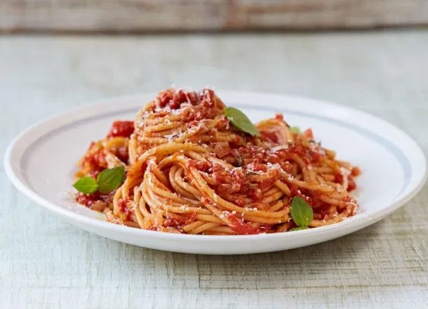

isoPlate
Dinner Recipes
Beat the Self Isolation blues by whipping up some of these tasty recipes with food stocked in the cupboards

Ingredients:
- 2 garlic cloves
- Olive oil
- Extra virgin olive oil (optional)
- 1 x 400g tin plum tomatoes
For the fresh pasta:
- 2 large handfuls plain flour, plus extra for dusting
- Tap water
Method
- Peel and finely slice the garlic, then place in a non-stick frying pan on a medium heat with 1 tablespoon of olive oil. Stir regularly until lightly golden.
- Pour in the tomatoes, either scrunching them through your hands or breaking them up with a wooden spoon.
- Let it simmer on a low heat until your pasta is cooked. Use tongs to drag the pasta straight into the sauce, letting a little starchy cooking water go with it.
- Put the flour in a bowl then gradually mix in just enough water to bring it together into a ball of dough (if it’s sticky, add a little extra flour).
- Knead for just a couple of minutes or until smooth and shiny.
- On a flour-dusted surface, use a rolling pin to roll out the pasta to about 2mm thick.
- Dust it well with flour then loosely roll it up. Use a sharp knife to slice it ½cm thick, then toss it with your hands to separate the strands.
- Cook in boiling salted water for 2 minutes then drain and toss with your chosen sauce.